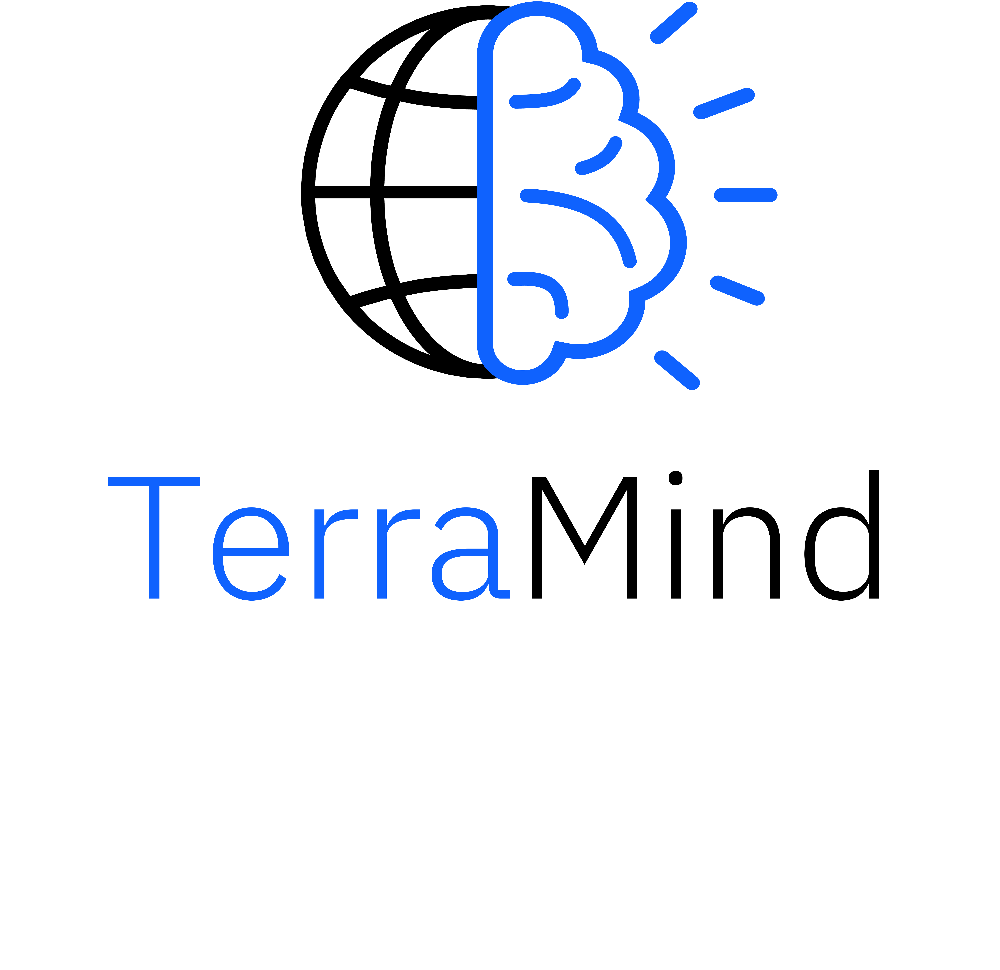
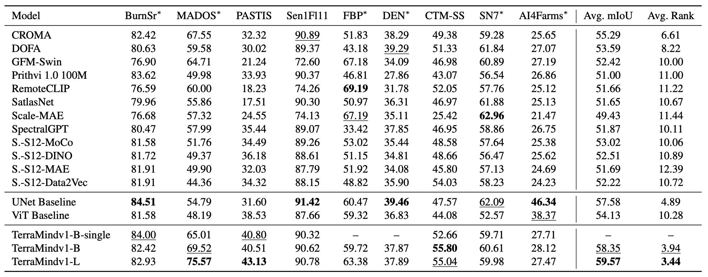

 TerraMind: Large-Scale Generative Multimodality for Earth Observation
organized by IBM and ESA
Try it out on HuggingFace! Find our arXiv preprint! Learn more about the TerraMesh dataset!Meet TerraMind, the first any-to-any generative, multimodal foundation model for Earth observation. TerraMind represents new levels of understanding geospatial data, introduces new capabilities such as Thinking-in-Modalities (TiM), and outperforms existing models significantly across benchmarks like PANGAEA.
💡 How does TerraMind work?

TerraMind is pretrained on dual-scale representations combining both token-level and pixel-level data across modalities. On a token level, TerraMind encodes high-level contextual information to learn cross-modal relationships, while on a pixel level, TerraMind leverages fine-grained representations to capture critical spatial nuances.
💭 What is Thinking-in-Modalities?
During fine-tuning or inference, TerraMind can pause for a moment, imagine a helpful but absent layer, append the imagined tokens to its own input sequence, and then lets the fine-tuned encoder continue to improve its own performance. Because the imagination lives in token space, we avoid the heavy diffusion decoding that full image synthesis would require. So, TerraMind can generate any missing modality as an intermediate step — an ability we call Thinking in Modalities (TiM).

🚀 How does TerraMind compare to other models?

TerraMind was benchmarked by ESA in both unimodal and multimodal settings following the community-standard PANGAEA benchmark. Overall, TerraMindv1-B outperforms all other GeoFMs by at least 3pp avg. mIoU. Importantly, TerraMind is the only foundation model approach in EO that outperforms task-specific U-Net models across the PANGAEA benchmark. Performance is approximately 2pp avg. mIoU higher for Terramindv1-L, with a peak of 5pp in multimodal datasets.

🏆 Need a challenge?
Find out more about our TerraMind Blue-Sky challenge here and the associated 1'000 EUR cash prizes.
TerraMind Blue-Sky Challenge